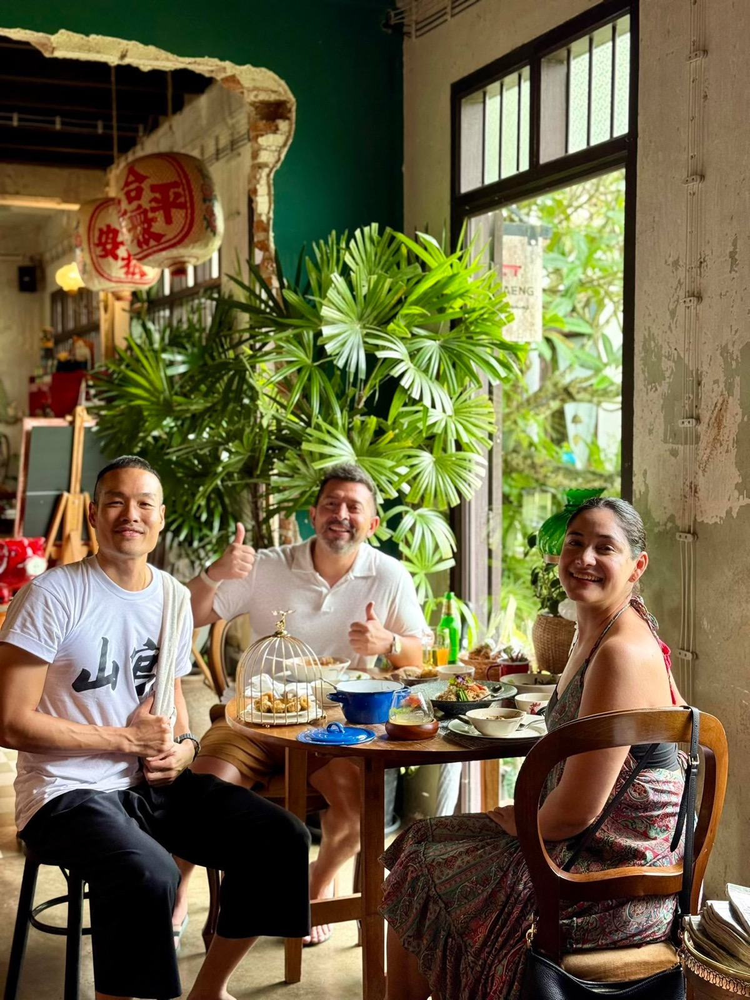
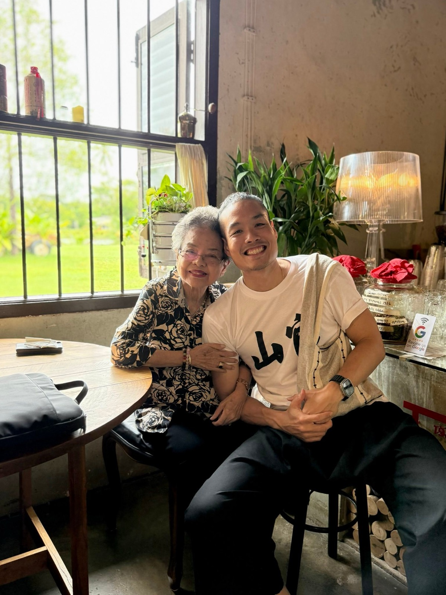

2568 · กิจการ · บันทึกย่อย
เจอลูกค้าโดยบังเอิญที่ร้านในเมือง ชวนแวะบ้านอาจ้อ


เรื่องเล่า มาตามนัดดด 🥰
แลต๊ะ ไปเปิดร้านในเมืองแล้วเจอลูกค้าน่ารักคู่นึง ไปอุดหนุนที่ร้าน ตั่วโก๊เล่าเรื่องกับชวนโม้ตามระเบียบ ซักพักถึงบางอ้อ ลูกค้าพักอยู่โรงแรมแค่ๆ บ้านอาจ้อเลยนิ แต่ดันไม่รู้จัก 😭
ร่ายมนต์เลย งานถนัดตั่วโก๊ 😇 ก่อนกลับแวะที่โต๊ะแดงที่บ้านอาจ้อด้วยน้าาา วันถัดมาลูกค้ามาแต่เที่ยงเลย กินไม่ยั้งเหมือนเดิม เพิ่มเติมคือได้เจอคุณแม่กับอาม่าาา ❤️✨
ไว้มาเที่ยวอีกนะคับ 😇
#longdaengPhuket 🧧
#tohdaengPhuket 🧧
#บ้านอาจ้อ ❤️